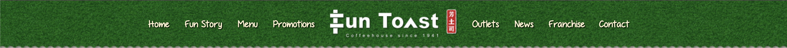

Uh-oh, this page isn't brewing anymore.
Back to Home
Or, keep scrolling!
Since you're here, let's have some !
Click the
Fun Toast Set
below to see what Kopi suits you!
What mood are you in?
Classic
Adventurous
How thick do you like your drinks?
Normal
Thin
Thick
Give me a recommendation
×
Your Coffee Recommendation